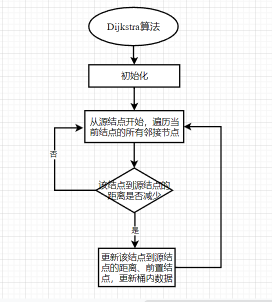
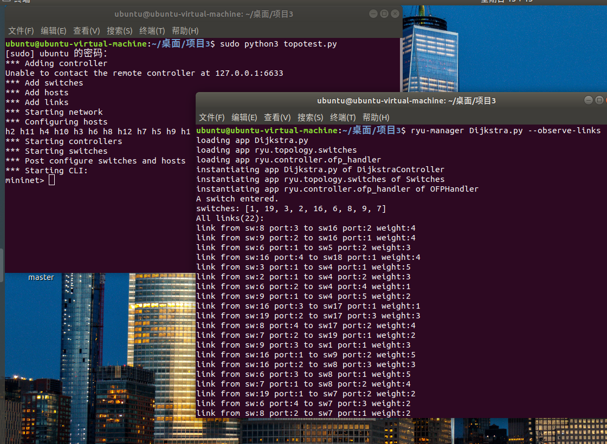
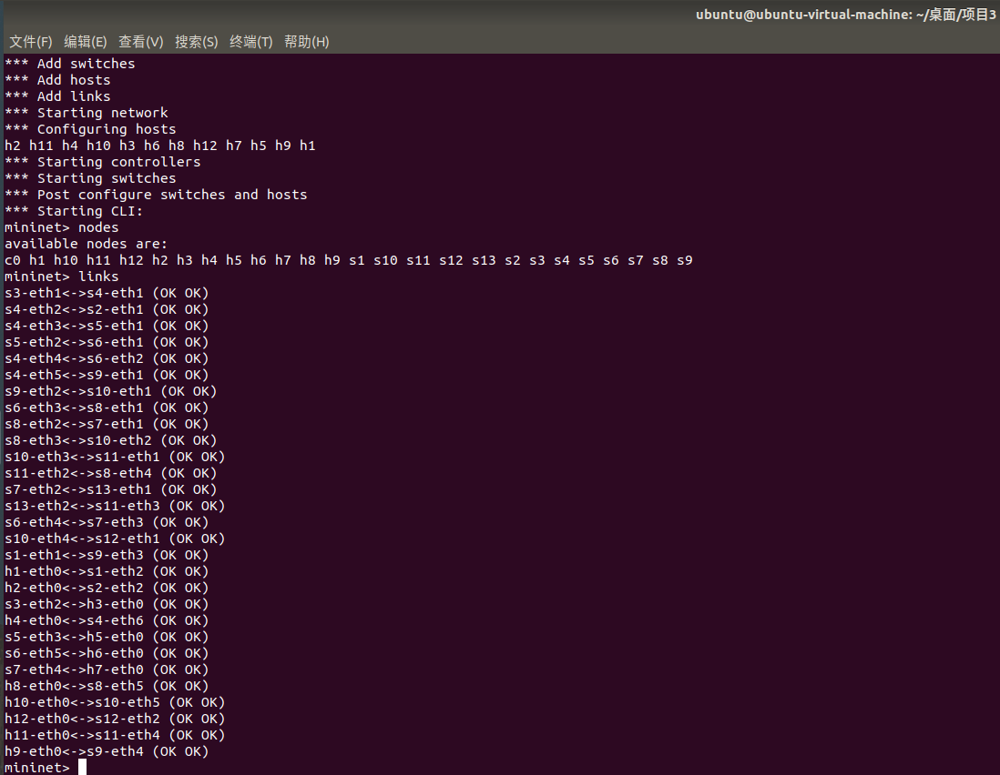
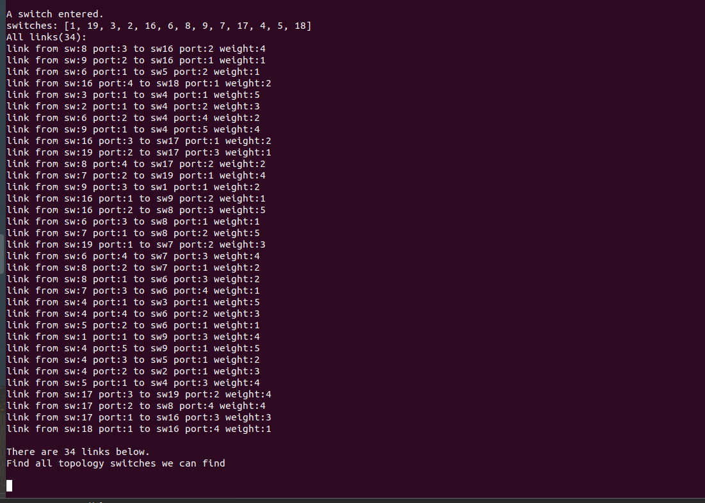
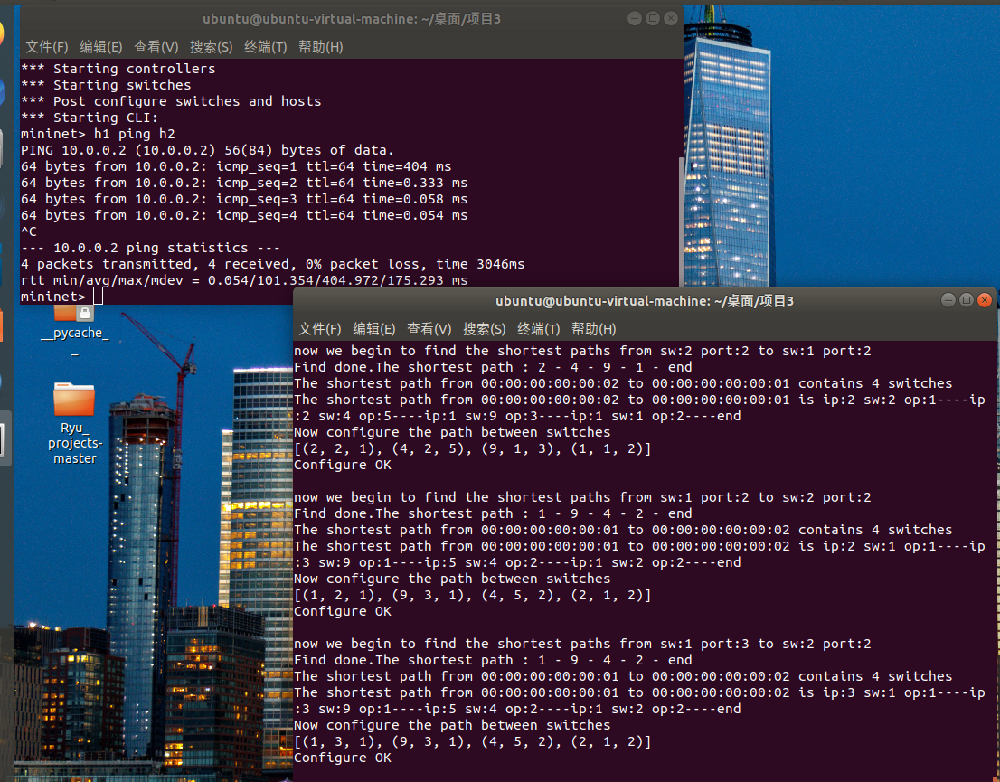
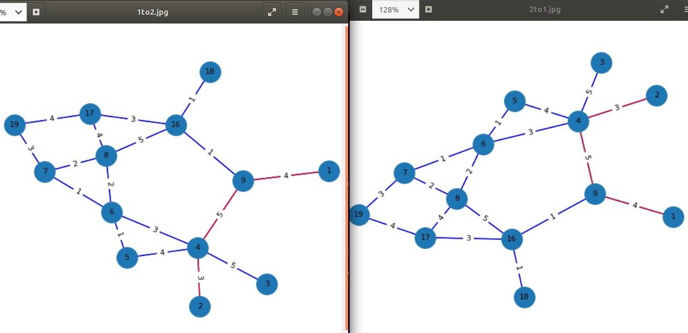
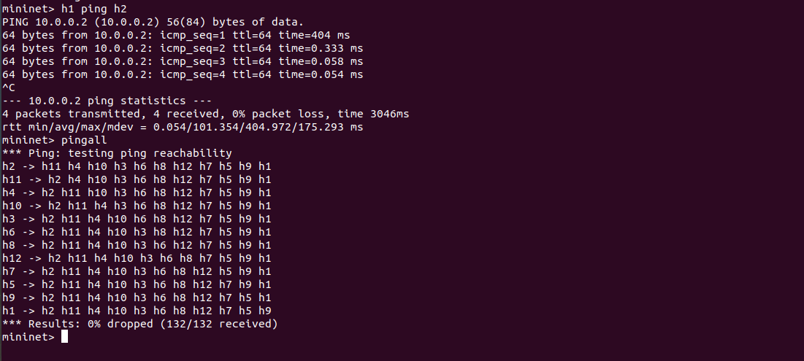
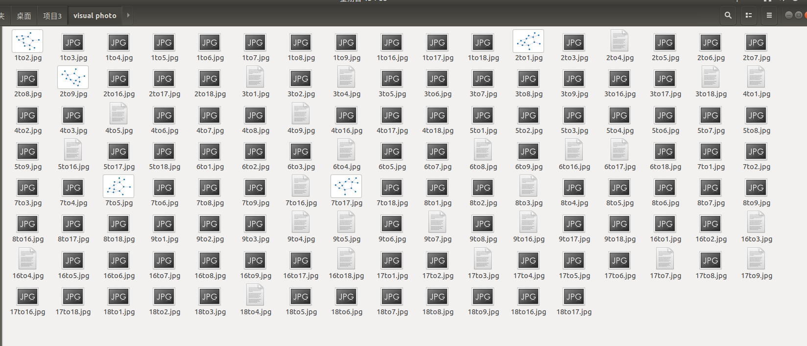

项目内容
Project3
- 使用Dijkstra算法（dial实现）计算任意两点间的最短路；
- 使用最短路由配置任意两点间的通信业务；
- 将所有业务在可视化平台上进行展示；
项目分析
就像老师说的，完成了Project1就相当于已经完成了Project3，我们只需要把Project1中Topo类中的BFS和DFS算法部分改成Dijkstra算法就可以了，然后对Controller类中部分路径配置代码适当修改即可。
项目思路
拓扑网络搭建
这次的拓扑网络跟Project1的一模一样，详见https://github.com/mlinku/Ryu-Course_Project中Project3部分。
Ryu控制器编写
Dijkstra算法
如果对Dijkstra不够了解，可以参见个人博客。
1、用 字典pre 记录结点路径的前置结点，字典dis 记录结点到源结点的距离。
2、初始化源结点到源结点的距离为 0，其他所有结点到源结点的距离为 9999999，前置结点为none。初始化桶的大小为边最大权值+1，源结点放入桶中。
3、从源结点开始，遍历从桶中取出结点的所有邻接结点，判断该结点到源结点的距离是否变短，如果变短了，则更新 dis 和 pre，更新桶中的数据。
4、当找到目的结点后，结束循环，并通过 pre 即前置结点，还原最短路径
5、将找到的最短路径转换成控制器配置的格式。
Dijkstra算法流程图
def Dijkstra(self, src_sw, dst_sw, src_port, dst_port):
bucket = CircleBucket(self.max_weight + 1) # 创建循环桶对象
bucket.updateBucket(0, src_sw) # 将源点先加入桶
# pre用于存储路径 并将所有交换机在路径的前置结点初始化为None
pre = {}
# dis用于存储距离 并将所有交换机离源交换机距离初始化为9999999
dis = {}
for sw in self.switches:
pre[sw] = None
dis[sw] = 9999999
dis[src_sw] = 0 # 将源结点的距离初始化为0
flag = 1 # flag 用于判断是否找到目的交换机 因为这是一个单源单宿问题
while flag == 1 and not bucket.checkBucketEmpty(): # 若还没找到目的交换机或桶内结点数不为空则继续循环
sw = bucket.getFirst() # 取出现在离源交换机最近的交换机
if sw == dst_sw: # 判断取出的交换机是不是目的交换机 如果是将flag置0并退出循环
flag = 0
break
for u in self.switches:
if u in (self.get_Adjdict(sw)).keys():
# print(self.get_Adjdict(sw)[u])
# 遍历取出交换机的所有邻接交换机 并更新循环桶内数据
if dis[sw] + self.get_Adjdict(sw)[u][1] < dis[u]: # 判断邻接交换机离源交换机的距离有没有缩短
dis[u] = dis[sw] + self.get_Adjdict(sw)[u][1]
pre[u] = sw # 设置前置交换机
bucket.updateBucket(dis[u], u) # 将桶数据数据更新
spath = [dst_sw]
sw = dst_sw
while pre[sw] != None: # 通过pre找出最短路径
sw = pre[sw]
spath.append(sw)
spath.reverse() # 将路径反转为从到源交换机到目的交换机
print("Find done.The shortest path :", end=" ")
self.printPath(spath) # 输出最短路径
'''
到这里就已经实现Dijkstra算法对路径的查找了，后面部分代码删去，详细参见Project3 代码讲解。
'''项目展示
图一 启动Mininet并用RYU控制器连接
图二 拓扑节点与链路展示
图三 RYU连接到的交换机之间的所有路径
图四 h1 ping h2结果
图五 h1与h2连接的可视化展示
图六 pingall结果
图七 所有可视化展示（虽然有些不能预览图片，但都可以打开)
- 本文链接：http://mlinku.top/2021/11/19/Project%203%20%E6%9C%80%E7%9F%AD%E8%B7%AF%E6%9F%A5%E6%89%BE/
- 版权声明：本博客所有文章除特别声明外，均默认采用 许可协议。